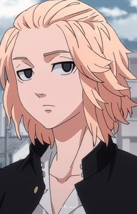
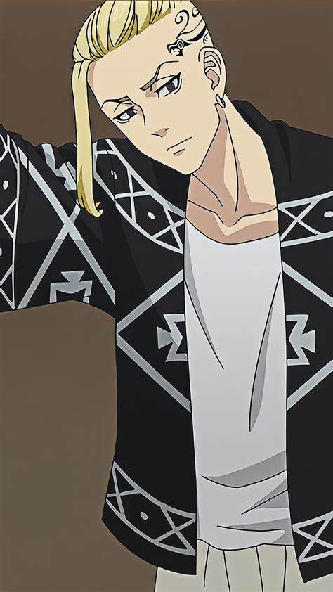

Tokyo Manji Gang
Toman
Takemichi Hanagaki
Takemichi
Ele é um jovem que pode viajar no tempo ou um Saltador no tempo.Para salvar sua namorada Hinata Tachibana e, com o tempo,todos de quem ele gosta, ele decide se tornar um membro,importante em Toman e salvá-los.
Tokyo Manji Gang
Toman
Manjiro Sano
Mikey
É o membro fundador e líder da Tokyo Manji Gang.Geralmente Ele é um adolescente despreocupado que adora brincar e pregar peças em torno daqueles que considera seus amigos íntimos. Ele se preocupa muito com eles e está determinado a proteger sua honra. Ele raramente mostra qualquer sinal de fraqueza, pois acredita ser a base e o suporte de Toman, e se o próprio pilar demonstrasse fraqueza, Toman também ficaria enfraquecido.
Tokyo Manji Gang
Toman
Ken Ryuguji
Draken
É o vice-presidente e um dos membros fundadores da Tokyo Manji Gang, sendo um dos principais personagens de Tokyo Revengers. Como o presidente, o vice-presidente Draken também é um indivíduo bastante selvagem. Ele adora uma boa luta e adora enfrentar adversários fortes.
Tokyo Manji Gang
Toman
Takashi Mitsuya
.jpg)
Mitsuya
É o Capitão da Segunda Divisão da Gangue Manji de Tóquio. Ele também é um dos membros fundadores. Ele é extremamente forte e um dos principais personagens de Tokyo Revengers.
Tokyo Manji Gang
Toman
Keisuke Baji
Baji
Keisuke Baji era o Capitão da Primeira Divisão da Gangue Tokyo Manji e um de seus membros fundadores, além de ser um dos principais personagens de Tokyo Revengers. Baji tem uma personalidade selvagem. Ele adora a emoção da adrenalina e o próprio Mikey diz que ele daria um soco em alguém na rua sem motivo aparente, apenas porque queria.
Tokyo Manji Gang
Toman
Kazutora Hanemiya
Kazutora
Kazutora Hanemiya é um dos membros fundadores da Tokyo Manji Gang, sendo também um personagem antagonista no arco da Valhalla em Tokyo Revengers. Quando criança, ele foi forçado a escolher entre sua mãe e seu pai em um caso de violência doméstica.